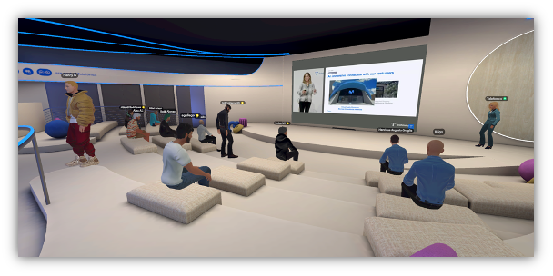

Le MASS est un marché unique et incontournable qui offre une plateforme de rencontre entre les acteurs du développement (secteurs publique et privé, les organisations internationales, les organisations non gouvernementales, la société civile, le secteur académique, les finances et les banques, etc.) et les fournisseurs de services spatiaux. Il s’agit de proposer des solutions spatiales concrètes pour résoudre les défis liés au développement socioéconomique du continent africain